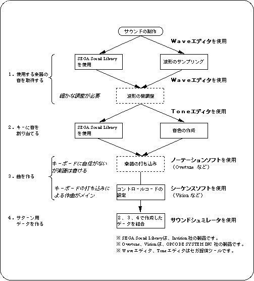

Return to previous page | Return to menu | Go to next page
This chapter explains how to create songs using the Sega Sound Tool and notes on using the tool.
I won't cover creating sound effects here, but sound effects can be created in exactly the same way as songs.
You may be confused at the beginning with a lot of terms, but since only the basic editing method is posted, please try it out for the time being.
The flow of sound production for Sega Saturn using the Sega Sound Tool is shown below.
In this flow, you can produce sound without MIDI sound source .
